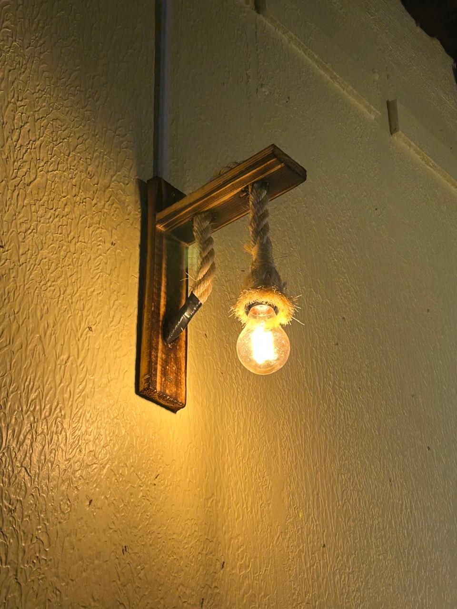

O Potencial da Energia no Campo: Desafios e Soluções para um Futuro Mais Elétrico e Verde

💡 Fontes de Energia Renovável e Suas Aplicações no Campo 🌿
☀️ Energia Solar Fotovoltaica ☀️

🌾 Bioenergia (Biomassa e Biogás) 🐄
💧 Pequenas Centrais Hidrelétricas e Microcentrais ⚡
Fontes de Energia: Renovável vs. Não Renovável
Fontes de Energia Renovável 🌱
Fontes de Energia Não Renovável ⛽
! Curiosidade !
💡 A Jornada da Lâmpada 💡
💡 Não Foi Um Inventor Isolado 💡
🌍 O Segredo: Filamento de Bambu Carbonizado 🎋

Entre em Contato Conosco 📧
Envie suas dúvidas, sugestões ou feedback. Sua opinião é importante! 📝